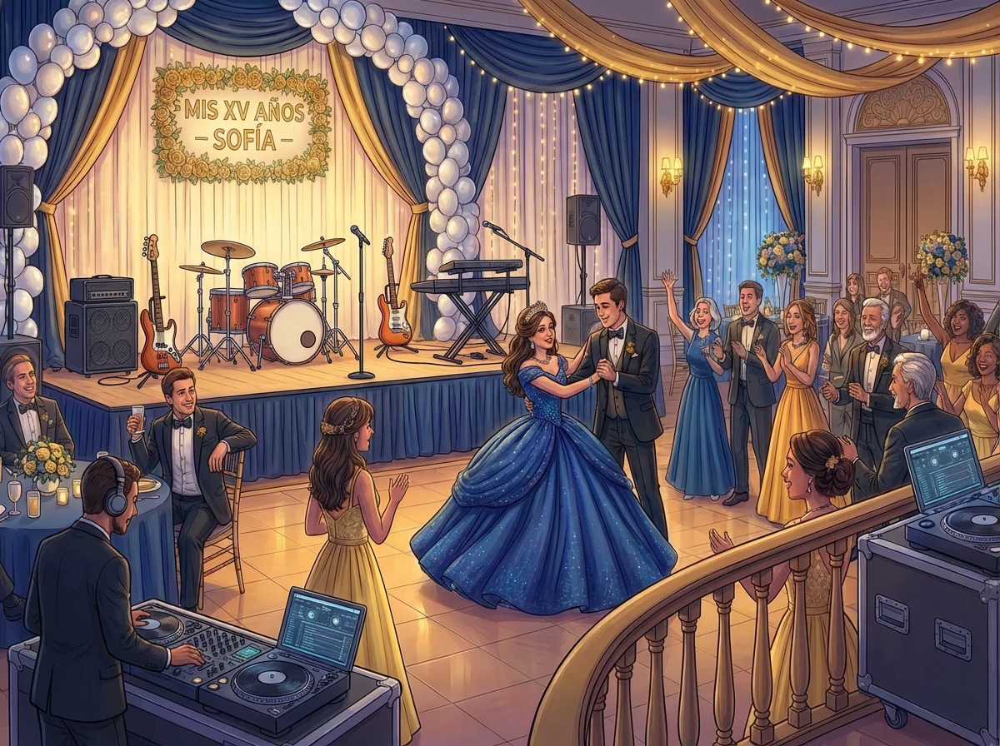

La selección musical para unos XV años en la Ciudad de México es una decisión que impacta directamente en la experiencia emocional del evento. No se trata solo de elegir canciones populares, sino de construir una narrativa musical que acompañe cada momento con coherencia y significado.
Este artículo ofrece criterios profesionales para seleccionar música para entrada, vals y fiesta, considerando tanto las tendencias actuales como los elementos tradicionales que siguen siendo relevantes en la CDMX.
Música para la entrada de la quinceañera
La entrada es el momento donde la quinceañera hace su presentación oficial. La música debe ser emotiva, solemne y crear expectativa.
Opciones clásicas
- Canon de Pachelbel: La opción más tradicional, elegante y atemporal
- Ave María (Schubert): Emotiva y solemne, ideal para entradas formales
- Marcha Nupcial (Wagner): Protocolar y reconocible
- Clair de Lune (Debussy): Elegante y sofisticada
Opciones modernas
- "A Thousand Years" (Christina Perri): Emotiva y popular entre quinceañeras actuales
- "Perfect" (Ed Sheeran): Romántica y contemporánea
- "Halo" (Beyoncé): Poderosa y emotiva
- "Somewhere Over the Rainbow": Versión instrumental, soñadora y elegante
Criterios de selección
- Duración adecuada para el recorrido de entrada (2-4 minutos)
- Tempo moderado que permita caminar con elegancia
- Letra significativa (si es canción con letra)
- Capacidad del grupo musical para ejecutarla con calidad
Música para el vals
El vals es el momento central de los XV años. La selección musical debe considerar tanto la tradición como las preferencias personales de la quinceañera.
Vals tradicionales
- "El Danubio Azul" (Johann Strauss): El vals clásico por excelencia
- "Sobre las Olas" (Juventino Rosas): Vals mexicano tradicional
- "Vals de las Flores" (Tchaikovsky): Elegante y sofisticado
Canciones populares adaptadas a vals
- "Tiempo de Vals" (Chayanne): La opción más popular en México
- "De Niña a Mujer" (Julio Iglesias): Emotiva y significativa
- "Quinceañera" (Thalía): Específica para la ocasión
- "Mi Niña Bonita" (Chino y Nacho): Moderna y emotiva
- "Butterfly Fly Away" (Miley Cyrus): Popular entre quinceañeras actuales
Vals con medley
Una tendencia actual es combinar varios vals en un solo set, permitiendo variedad sin perder coherencia:
- Inicio con vals tradicional (1 minuto)
- Transición a canción moderna adaptada a vals (2 minutos)
- Cierre con vals emotivo (1-2 minutos)
Consideraciones técnicas
- Tempo estable entre 58-62 BPM para vals tradicional
- Capacidad del grupo para extender o acortar según la coreografía
- Transiciones suaves si se usa medley
- Arreglo musical que permita momentos de pausa para coreografía
Música para la fiesta
La fase de fiesta requiere versatilidad para mantener a todos los invitados participando. La playlist debe considerar diferentes edades y preferencias musicales.
Música para todas las edades
- Cumbia: "La Cumbia del Río", "Cumbia Sobre el Río", "La Chona"
- Salsa: "Vivir Mi Vida", "La Rebelión", "Aguanile"
- Merengue: "Suavemente", "A Pedir Su Mano", "El Tiburón"
- Rock en español: "Rayando el Sol", "La Celula Que Explota", "Flaca"
Música para jóvenes
- Reggaetón: "Tusa", "Dákiti", "Safaera" (versiones editadas)
- Pop latino: "Baila Baila Baila", "Hawái", "La Tóxica"
- Música urbana: "Ella Baila Sola", "Un x100to", "Qlona"
Clásicos que nunca fallan
- "Conga" (Gloria Estefan)
- "I Wanna Dance with Somebody" (Whitney Houston)
- "Uptown Funk" (Bruno Mars)
- "Don't Stop Me Now" (Queen)
- "Despacito" (Luis Fonsi)
Estrategia de playlist
- Inicio: Canciones enérgicas para activar la pista (cumbia, salsa)
- Medio: Alternar géneros para mantener variedad (pop, reggaetón, rock)
- Picos de energía: Canciones conocidas que todos puedan cantar
- Pausas estratégicas: Baladas o canciones lentas para descanso
- Cierre: Canciones emotivas o de despedida
Checklist de selección musical
Entrada
- ☐ Definir si será clásica o moderna
- ☐ Confirmar duración adecuada para el recorrido
- ☐ Verificar que el grupo pueda ejecutarla con calidad
- ☐ Escuchar demo o versión previa si es posible
Vals
- ☐ Decidir entre vals tradicional, moderno o medley
- ☐ Confirmar tempo adecuado para la coreografía
- ☐ Verificar capacidad del grupo para ajustes en tiempo real
- ☐ Coordinar transiciones si se usa medley
Fiesta
- ☐ Incluir géneros variados para todas las edades
- ☐ Confirmar que el grupo pueda ejecutar música urbana actual
- ☐ Establecer lista de canciones prohibidas o no deseadas
- ☐ Permitir flexibilidad para solicitudes del público
Errores comunes en la selección musical
- Elegir canciones sin considerar la capacidad del grupo para ejecutarlas
- No definir claramente las canciones para momentos protocolarios
- Seleccionar solo música actual sin considerar a invitados de mayor edad
- No coordinar con el grupo musical las versiones específicas de las canciones
- Omitir la revisión de letras de canciones (especialmente en música urbana)
Preguntas frecuentes
¿Cuántas canciones debe incluir la playlist de fiesta?
Para una fiesta de 3-4 horas, se recomienda una lista de 40-50 canciones, considerando que algunas pueden extenderse o acortarse según la respuesta del público.
¿El grupo musical puede tocar reggaetón y música urbana?
Un grupo versátil profesional debe tener capacidad para ejecutar géneros urbanos actuales. Es importante confirmar esto durante la contratación.
¿Es necesario proporcionar la lista completa de canciones al grupo?
Es recomendable proporcionar las canciones específicas para momentos protocolarios (entrada, vals) y una lista de referencia para la fiesta, permitiendo flexibilidad al grupo para adaptarse al público.
¿Qué hacer si la quinceañera quiere una canción que el grupo no conoce?
Un grupo profesional puede aprender canciones específicas con anticipación suficiente (2-3 semanas). Es importante comunicar estas solicitudes durante la planeación.
La selección musical para unos XV años en la CDMX requiere equilibrio entre tradición y modernidad, considerando tanto los momentos protocolarios como la diversión de todos los invitados. Un grupo versátil profesional puede ejecutar desde vals clásicos hasta música urbana actual, ofreciendo la versatilidad necesaria para un evento exitoso.
Para eventos donde la música debe adaptarse a diferentes momentos y perfiles de público, es recomendable trabajar con grupos profesionales con experiencia comprobada en XV años.